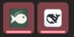
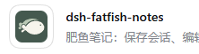

FATFISH NOTES / BRAND ATLAS
让原来的肥鱼，
在每个位置都被看见。
保留饱满的鱼身、轻轻翻起的叠页，
以及已经确认的字形与提亮绿。
提亮绿 · #3F5A4E页片绿米白
先看原版与 A 版的小尺寸对比 ↓当前配色 × 原版图形与字形
01 / AT ACTUAL SIZE
小，也值得保留原来的样子。
同一尺寸、同一主色、同一背景。上排原版，下排 A；点击图形可放大观察。
100% 页面缩放下观察；尺寸由浏览器实际排版，不放大缩小冒充原尺寸。
原版 保留饱满鱼身和弧形叠页。A 版 放大眼孔、突出分叉尾部，并沿用较深的微型页片绿；目前已安装候选在小入口和任务栏使用它。两稿均保留各自原有细节。
同尺寸切换，感受整体轮廓
用 16 px 看入口，用 24 / 32 px 看任务栏。也可以放大观察眼孔和页间留白。
放大 4 倍 · 用于看像素，不是实际尺寸
02 / IN CONTEXT
不只看图标，也看它所在的位置。
先比较原版与 A 的视觉效果，再决定接入位置。以下为等尺寸场景演示。
查看你提供的实际截图与当前用法


03 / SYMBOL & APP ICON
纯图形与应用图标。
以下都沿用原版轮廓。透明眼孔和页间留白，直接透出所在背景。
04 / FULL SIGNATURE
图形、中文、英文，还是原来的组合。
保持原有字形与排布，分别查看实底、透明以及不同展示尺寸。
256 px 为标称显示宽度；窄屏容器不足时等比缩小，点击可按原尺寸查看。
介绍与封面
完整组合，用原字形形成稳定识别。
帮助页面
透明组合自然融入页面底色。
功能入口
使用纯鱼形，不把完整名称塞进小图标。
05 / TAKE A CLOSER LOOK
选一个版式，下载实际素材。
直接从当前矢量稿导出。PNG 保留应有的透明度；原版小尺寸不会被自动替换为 A。
06 / THIS ROUND
这次看完，补充你的判断。
与上一轮已确认配色分开记录。选择和文字修改后自动保存；告诉我已填好后，我再读取整理。
正在读取本轮反馈…
通过本机服务打开时，意见写入本项目的本轮反馈文件，其他浏览器打开同一地址可以读回。直接双击 HTML 时仅保存在当前浏览器。保存本身不会启动开发、替换图标或发布。